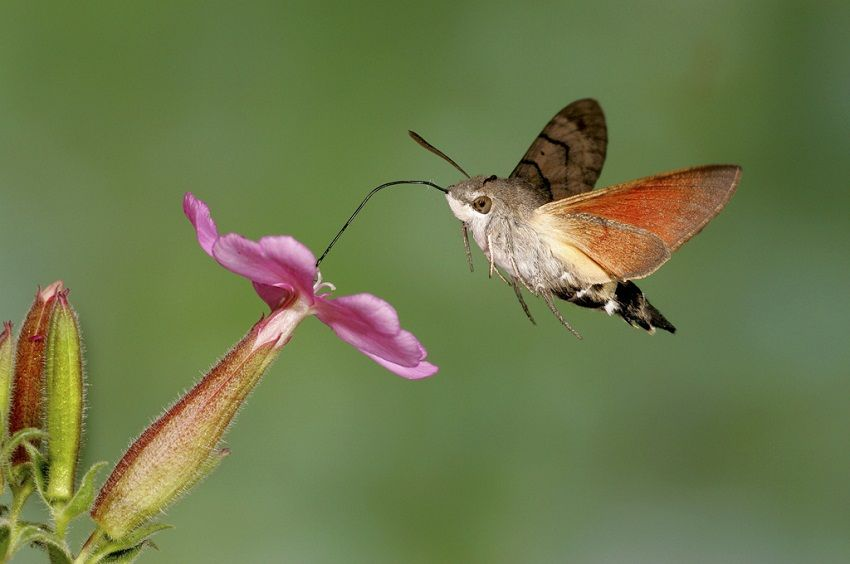

You might have seen these pheasants at the zoo but those are actually hybrids. The real golden pheasants are native to the Western forests of China. Named after their golden crests, we are wowed by the male’s colorful body! They can grow up to 41 inches long and the tail is 2/3 the length of the entire body. Golden pheasants are really hard to find and there is little known about them as they are seldom seen in their natural habitat. There are only about 1000-2000 of these beautiful birds left.
First described by the naturalist Carl Linnaeus, this is not your everyday moth. Not quite as cute as the poodle moth described later on this list, it is instead distinguished by its exceptional size — it’s as large as a hummingbird! — and prominent reddish wings.
where to spot a Hummingbird Hawk-Moth. You can see the hummingbird hawk-moth in Scotland, Wales, Ireland and England, where it’s often found feeding in gardens and woodlands.
Also known as the “Enigmatic Owlet-[Nightjar](https://www.wildlifetrusts.org/wildlife-explorer/birds/swallows-swift-martins-and-nightjar/nightjar)” this is one of the most mysterious of all the rare birds on the list. Bigger than the [Australian Owlet-Nightjar](https://www.birdsinbackyards.net/species/Aegotheles-cristatus), it was second in size only to the [New Zealand Owlet-Nightjar](http://nzbirdsonline.org.nz/species/new-zealand-owlet-nightjar) which is now extinct. Back in 1880, only two New Caledonian Owlet-Nightjars were collected. One of them was discovered as he flew into a bedroom in Tonghoué, a small village in New Caledonia. By 1915 only very few were spotted. Researchers believe that their numbers haven’t risen. The New Caledonian Owlet-Nightjar is black with grey stripes with a long slightly rounded tail, short, rounded wings, and long, stout legs showing he is a ground feeder. Its voice is unknown but it is assumed he makes similar sounds to other Owlet-Nightjars: whistles and prolonged trilling sounds. Less than 50 New Caledonian Owlet-Nightjars are left and no conservation efforts have been made to conserve this species.
The bird is endemic to the island of New Caledonia, which is in the South Pacific Ocean to the east of Australia.
The Orange-Bellied Parrot (Neophema chrysogaster) is found in Australia, and it is regarded as a rare bird since fewer than 50 of the species are found in the wild. The bird is listed as critically endangered and among its threats are invasive species, degradation of habitats and diseases. The bird is on the IUCN red list as critically endangered species and their population is decreasing.
The Orange-bellied Parrot breeds in the south-west of Tasmania and migrates in autumn to spend the winter on the mainland coast of south-eastern South Australia and southern Victoria.
Native to the Philippines, the Rufous-headed Hornbill is one of the most endangered of its species. They sport a bony ‘casque’ which sticks out from the top of their wrinkly red-orangey bills. The bill may seem strong but it is actually structurally thin with hollow bone cells. Rufous-headed Hornbills have an interesting way of protecting their little ones: both mama and papa use saliva and mud to build a wall across the entrance to a tree cavity, essentially sealing the female and eggs inside. They leave a small hole at the top through which the male can pass food. And if that isn’t enough, the parents are extremely territorial when defending the nest. The Rufous-Headed Hornbill is now extinct on some of the Philippine Islands due to severe deforestation, in addition to hunting and nest poaching. However a great conservation effort is being made to save them, mainly by guarding their nests. Optimistically, their numbers seem to be back on the rise.
This species is endemic to the Western Visayas in the Philippines, where it is presumed to have occurred on three islands: Guimaras, Negros and Panay. It is now absent from Guimaras and survives only on Negros and Panay (Collar et al. 1999).